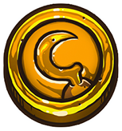
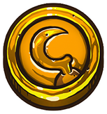

The treasure maps of Carrrds
De schatkaarten van Carrrds
Click on the colours to view their respective islands.
Klik op de kleuren om het bijbehorende eiland te bekijken

Venture forth across the high seas as one of six pirates in search of the lost treasure maps of Carrrds!
Ga als een van de zes piraten op zoek naar de verloren schatkaarten van Carrrds!
Defeat yer rivals with swords and guns, but beware the parrot thief! Can ye find the gold and win the game?
Versla je tegenstanders met zwaard of pistool, maar pas op dat de papegaai niks van je steelt! Vind jij het meeste goud?
Carrrds is an exciting card game for pirates of all sizes.
Carrrds is een spannend kaartspel voor drie of meer kleine en grote piraten!
Carrrds is an exciting card game that's played with 3 to 6 people.
Carrrds is een spannend kaartspel dat je met 3 tot 6 mensen kunt spelen.
The objective of the game is to obtain as many complete treasure maps as possible. Complete the treasure maps by asking other players for the parts you are missing.
Het doel van het spel is zo veel mogelijk schatkaarten te verzamelen. Je kunt schatkaarten bij elkaar sparen door andere spelers om de stukken te vragen die jij mist.
Hidden in the box of Carrrds! are various weapons and trinkets which can be used to defend and plunder!
In het Carrrds! doosje zitten verschillende wapens en voorwerpen om jezelf te verdedigen en anderen te plunderen!
Click on the colours to view their respective islands.
Klik op de kleuren om het bijbehorende eiland te bekijken
A true pirate never plays by the rules! Use these Carrrds to defend yer scurvy hide!
Een piraat speelt nooit volgens de regels! Gebruik deze kaarten om je te verdedigen!
 

Every pirate should have a sword! Yarrr! Sword cards allow you to decline when someone asks you for an island you have. By playing the sword at that moment you'll start a duel. If you win the duel, it's your turn AND you keep the card!
Elke piraat moet een zwaard hebben! Door een zwaard kaartje te spelen kun je nee zeggen tegen iemand die aan jou een eiland kaart vraagt.
Do ye want an even more epic pirate experience?
Wil je een absoluut geweldige piraten ervaring?
With atmospheric effects to really get into the pirate mood!
Met geluidseffecten en spelmodi om echt in de piratensfeer te komen!
Download the Carrrds companion app!
Download de Carrrds companion app!
Here you'll find various usefull documents such as the manual and a cheatsheet with all of the icons and colours of the islands.
Hier kun je verschillende nuttige documenten vinden zoals de handleiding en een spiekkaart met alle iconen en kleuren van de eilanden.
Q: Can I start a duel with a gun instead of a sword?
A: Yes that's perfectly acceptable
Q: Kan ik een duel starten met een pistool in plaats van een zwaard?
A: Ja dat kan.
Q: What do I do when it's my turn, but have no cards?
A: Draw a card and skip this turn.
Q: Wat doe ik als ik aan de beurt ben maar geen kaarten heb.
A: Trek een kaart en sla je beurt over.
Q: Can I counter a gun with another gun?
A: No. The duel is over the moment a gun is played.
Q: Kan ik een pistool stoppen met een pistool?
A: Nee. Het duel is direct voorbij als er een pistool gespeeld wordt.
Q: Can I counter a flag?
A: Yes. A flag only removes the need to ask for a specific card, you can still counter with sword or pistol.
Q: Wat kan ik tegen een vlag doen?
A: Alles wat bij een normale vraag ook kan. Dus, een pistool, zwaard en papegaai kunnen nog steeds gebruikt worden.
Q: Can my parrot steal from another parrot?
A: Yes. The person who plays the last parrot wins the card.
Q: Kan mijn papegaai van een andere papegaai stelen?
A: Ja, de persoon die de laatste papegaai speelde wint de kaart.
Q: Can I use voodoo in the middle of someone's turn?
A: No. You can only voodoo a person who is not in the middle of his turn.
Q: Kan ik voodoo gebruiken midden in iemand zijn beurt?
A: Nee. Je kan alleen maar voodoo spelen op iemand die nog niet aan zijn beurt is begonnen.
Available on:
Beschikbaar op: